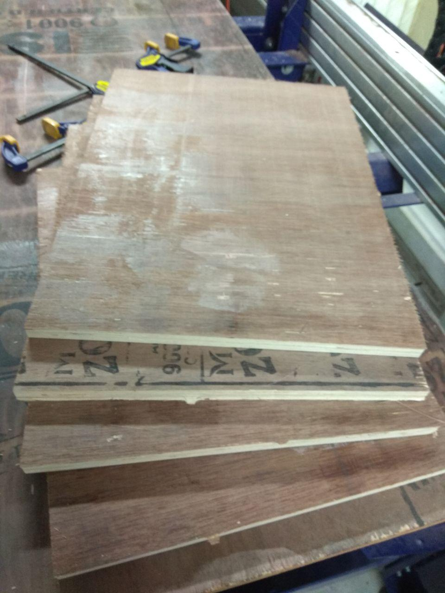
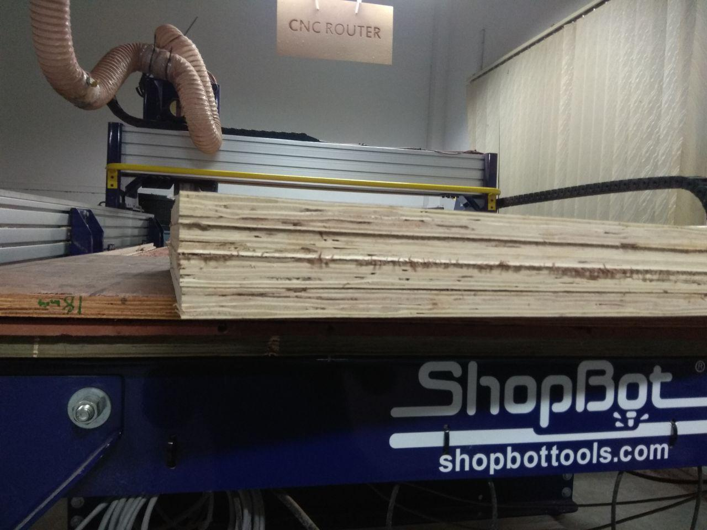
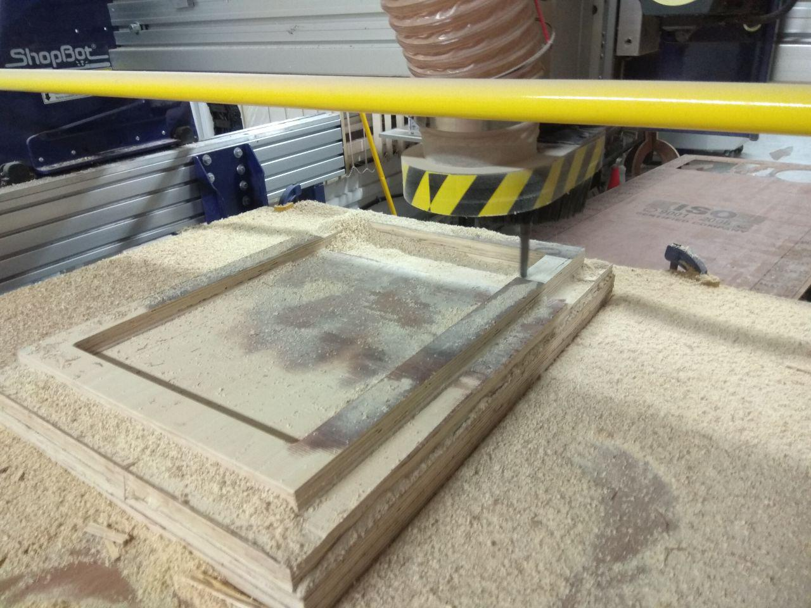

- Design and produce something with a digital fabrication process not covered in another assignment.
- Possibilities include (but are not limited to) composites, textiles,biotechnology, robotics, and cooking.
Introduction
This week we need to something that not covered in another assignment and also must incorporating computer-aided design and manufacturing.we have some options like we can use composites, textiles, biotechnology, robotics and cooking.After the professor class i was very much interested in composites so first i was going make something usefull using composites .
Composites
So what is composit ..? A composite is a material made from two or more different materials that, when combined, are stronger than those individual materials by themselves.
Concreteis a best example of composites.
Design
Every week when i started do something i tried to do something usefull ans something different,so here i thinked to do smothing usefull in Composit.so i decided to make a Hydroponic Grass Fodder Tray i always want to build the Hydroponics so i decided to make a Tray .
I staretd desgin in Rhino with the help of my instructor Rashid.
3D model
Milling and Cutting
For my design i need to make wooden mold of 6 cm thickness , so i used 18mm (1.8 cm) and stacked 4 nos. first i cutted the 18mm plywood sheet into four pieces and glue it together.
First i measured the ply-wood based on the design , after ensuring everything is correct , i loaded ply-wood into the shopboat.
After cutting the required part , i removed the tab's.my instructor Nisam was help me to do these process.
Stacking
For the mold i need to put all the 4 pieces into a stack , so here i used Fevicol Synthetic Resin Adhesive wooden glue to make it stack.
After glued everything stacked 4 pieces togther , my friend Hari was help me to do these process .
Now I have to put something heavy on the plywoods to stick all the layers well. I used a spare transformer and big stone :-) .

After waitng almost 5 hours it's completey stacked togther.now time to mill our mold.
CNC milling
After Stacking the ply-wood , loaded it with it on the shopboat.
befor milling i secured it with in a ply-wood using screws from bottom to top and after i secured playwood with the sacrfical layer on the shopboat.
Milling
After checking everything is fine with the help instructor Rashid ,so i started make tool path using VcarvePro after that started mill using ShopBot CNC.
After 8 hours milling due to some shopbot machine failure and power failure, milling process was stucked and can't continue mill, i was very frustrated :-/ .after discussing with instructor i decided to stop the milling process.
Now we got the mold , so we can make composite.
Composite
For composite i used Linen Fabric.
First i coverd the mol using Release Film

full coverd, with the help of Relese Film we can peel the composites from the mold easly at last , otherwise it will stuck it on the wooden mold.
Next i cutted Linen and Breating based on the mold shape and length,i used scissors.
Next arranged all the items togther ,the Relese PEEL PLY ..etc
vacuum bag Setup
In our lab we don't have special Vacuum bag, we need to make it using plastic sheet.
Cutted the platic sheet ,based on the required amount sheet i need to make the Vacuum bag, and i used Double sided tape to ensure it's vacuum.
Now Vacuum Bag is completed
Preparing resin
I used Easy Cast Transparent Epoxy Resin and it' having mixing ratio of 100A:50B and the curing time is about 24 hrs.

Mixed both in 100A:50B ration
Making the composites
Here I'll be using 4 layers of linen for the composites
- First painted some resin on top of relesing Flim
- Soaked First layer of Linen in Resin and applied it on the mold
- Added remaining 3 layer Linen one by one after soake it on the resin
- Then i applied "Relese PEEL PLY" on top of the 4th layer Linen
- Then i added "Breating" layer on top of PEEL PLY
- At last i sealed Vacuum bag that we already seted
- I used Vaccum cleaner for maing vacuum in the vacuum bag, it's work perfectly :-)
here you can see the excess resin on top our Breating layer (black spot) .
Touch-up
After 24-hr i relesed it from the mold and removed Relese Peel and Breathing layer.
I removed the excess Linen from the Composite using bandsaw.
Hero shot
Resource
* Here you can find all the Design files .